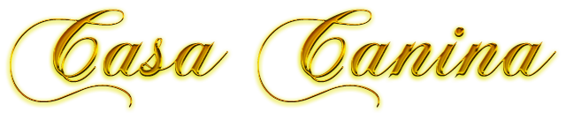
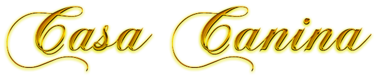
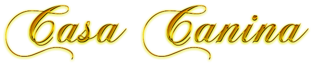
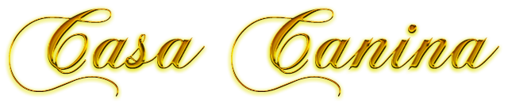

Nuestra casa adoptiva nació con el propósito de brindar una segunda oportunidad a los perros en situación de calle o maltrato. En muchas ocasiones, estos animales son víctimas del abandono, el abuso o la indiferencia. Desde nuestros inicios, hemos trabajado incansablemente para rescatar, rehabilitar y encontrar hogares responsables y amorosos para cada uno de ellos.
Este proyecto surgió de un grupo de voluntarios apasionados por el bienestar animal, quienes comenzaron rescatando perros abandonados en la comunidad. Con el tiempo, la iniciativa creció gracias al apoyo de ciudadanos comprometidos, lo que permitió la creación de un espacio seguro donde los canes reciben atención veterinaria, alimentación adecuada y socialización antes de ser adoptados.
Desde nuestros primeros rescates, enfrentamos grandes desafíos, como la falta de recursos, el desconocimiento sobre la adopción responsable y la necesidad de crear conciencia en la comunidad. Sin embargo, con esfuerzo y dedicación, hemos logrado cambiar la vida de cientos de perros.
Nuestra misión es fomentar la adopción responsable, concientizar sobre la tenencia adecuada de mascotas y reducir el abandono animal. Consideramos que cada perro merece vivir en un entorno donde reciba amor, cuidado y respeto.